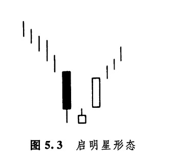
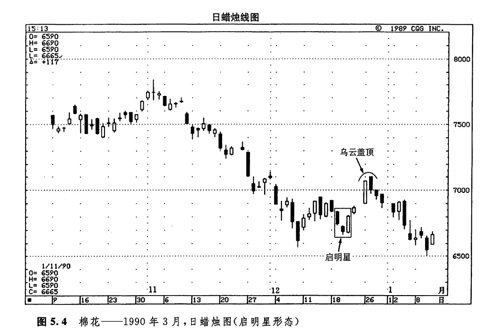
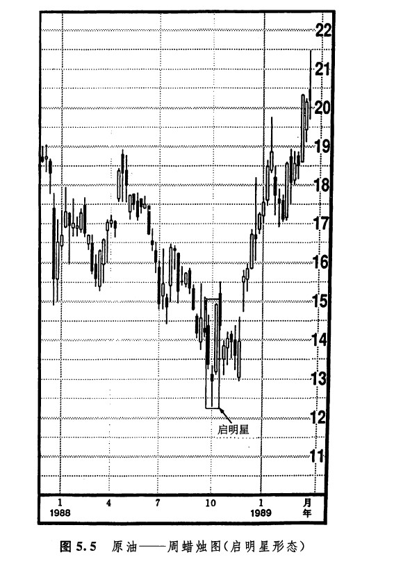
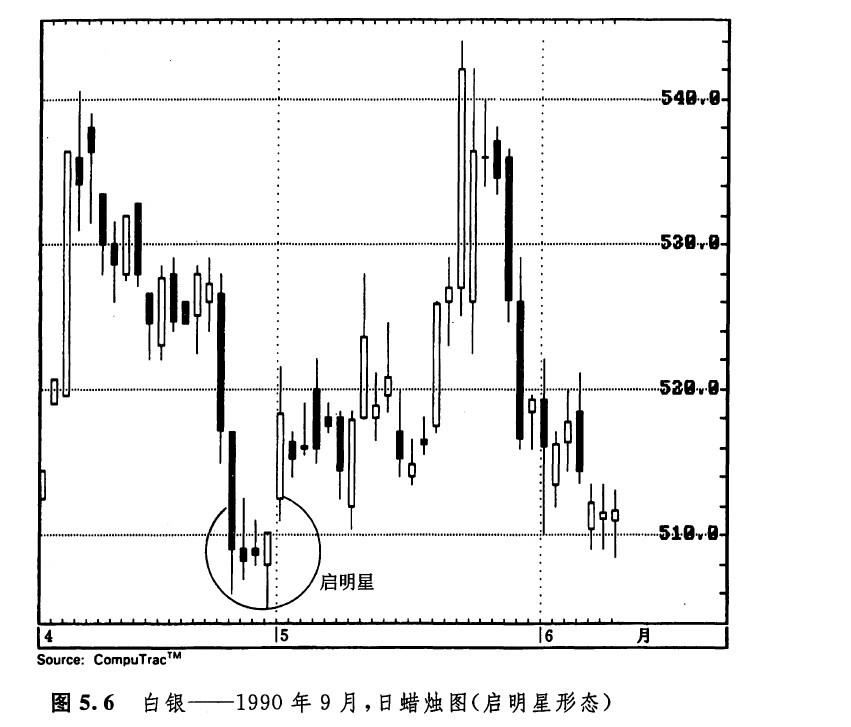

启明星形态属于底部反转形态（如图5.3所示）。它的名称的由来是，这个形态预示着价格的上涨，就像启明星（水星）预示着太阳的升起一样。在本形态中，先是一根长长的黑色实体，随后是一根小小的实体，并且在这两个实体之间形成了一个向下跳空（这两条蜡烛线组成了基本的星线形态）。第三天是一根白色实体，它明显地向上推进到了第一天的黑色实体之内。本形态发出的信号是，牛方已经重新夺回了主导权。为了交代清楚本形态的理论背景，我打算把这个形态分解开来，对其中的三根蜡烛线逐一加以研究。

当第一条黑色实体蜡烛线出现时，市场正处于下降趋势中。到此时为止，熊方还占着上风。随后的一天，是一个较小的实体。这就意味着，卖方已经失去了将市场进一步压低的能量。第三天，市场形成了一根坚挺的白色实体，这就证明牛方已经夺取了统治权。在理想的启明星形态中，中间蜡烛线（即星线）的实体，与它前、后两个实体之间均有价格跳空。后面的那个价格跳空较为少见，不过，即使没有后面这个价格跳空，似乎也不会削减启明星形态的技术效力。
如图5.4所示，从12月19日到21日，市场上形成了一个看涨的启明星形态。从这个形态开始，市场酿成了一轮上涨行情，这轮上涨行情在遇上12月26日和27日的乌云盖顶形态以后，就失去了上升的动力。在图5.5中，10月里的低点是市场以星线的形式创造出来的（即，10月头一个星期的小实体）。在这条星线的下一周，市场形成了一根强劲的白色实体。这条白色实体完成了图示的启明星形态。跟着这条白色蜡烛线的，是一条黑色的蜡烛线，两者一起组成了一个乌云盖顶形态。随后，市场暂时向下回落。尽管如此，该启明星形态还是构成了一个主要的底部。如图5.6所示，是一个启明星形态的变体，其中包含了好几条小星线（在本例中，是三颗“星星”）。请注意，其中第三根小实体（即第三根星线）既是一根锤子线，同时也是一根看涨的抱线。



copyright @ 2018 制作：汉钛电线，Hingtak Wire & Cable LLC